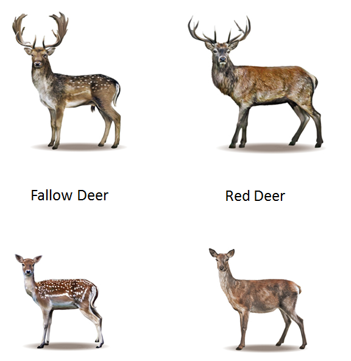
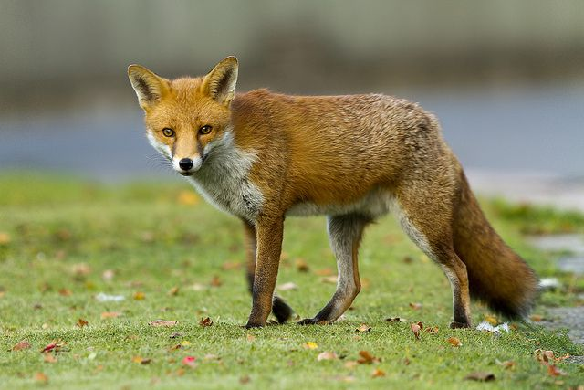
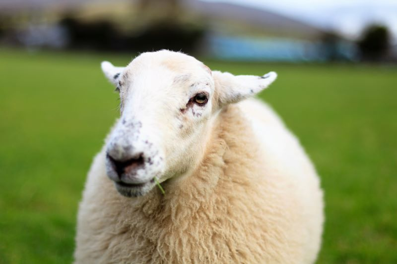
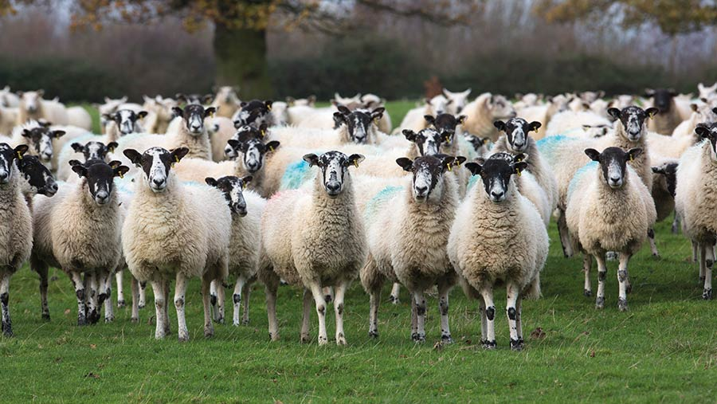
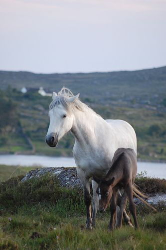

Deer

In Ireland, deer are a common sight, especially in Irelands largest park called "Phoenix Park."
There are two main species of deer found in Ireland, the 'Red Deer' and the 'Fallow Deer.'
Red Deer are the largest mammal found in Ireland, they get their name from their red, chestnut coloured coat
and their big antlers.
Fallow Deer are smaller than Red Deer, this type of deer also has more coat colours including; black, white, and chestnut.
They can be found in the same areas as Red Deer, both species diet consists of vegetation across Ireland.
Deer inhabit the forests, grasslands and some parks around Ireland. As mentioned above, they are a common sight
in Phoenix Park. They are more trusting towards people than wild deer found in other parts of Ireland, if you are lucky,
you might even be able to feed them! Although it is not recommended as they are still wild and have natural instincts.
Fox

Foxes are able to adapt easily to any habitat, this means we can find them all over Ireland, even in urban areas.
A foxes diet consists of hunting small animals like mice and birds, they also eat fruits and vegetables.
Their size varies based on where they are located and their diet.
Foxes control our rodent population by hunting them which is beneficial for humans, although some people see them as pests
and a nuisance, they are actually quite intilligent creatures.
Irish Hare
Similar to foxes, Irish hares are widespread all across Ireland. Female hares are larger than male hares which makes them
the dominant gender. When breeding season arrives, it is often seen hares boxing eachother and it is usually the female boxing
the male.
Their coat colour is a 'russet brown,' but this brown colour varies from light to dark. Their tails and belly
are white. The Irish hares' diet and habitat changes seasonally but they mainly graze on grass and herbs.
These hares have been mentioned in Irish folklore and literature, making the significant within the Irish culture.
Galway Sheep
The Galway sheep is a breed of sheep that is native to Ireland, they are specifically found in the western part
of Ireland in Galway, hence the name.
Some of the characteristics of the Galway sheep include a white coat and sometimes a black face.
They have short, thick necks and sturdy legs.
They are mainly bred for their meat, which is known to be flavourful and tender. Their wool is used for various crafts and textiles.
These sheep mainly graze on grass, plants, and certain legumes. Since sheep mainly graze on grass, they make good lawnmowers.
 
Connemara Pony

The Connemara pony is a breed native to Ireland, they are fairly tall for ponies, up to 14 hands high and can weigh
up to 400kg. They have a diverse range of coat colours, including chestnut, bay, dun, and gray.
These ponies were originally bred as workhorses for transport and farming activities. Over time, they got recognised
for athleticism and now they make good competition ponies.
In addition to that, if Connemara ponies are well taken care of, they can live up to 35 years.